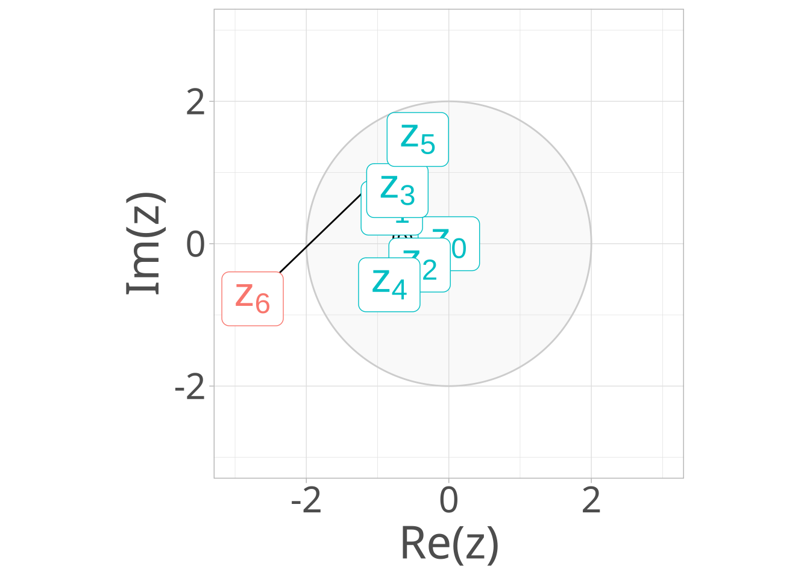
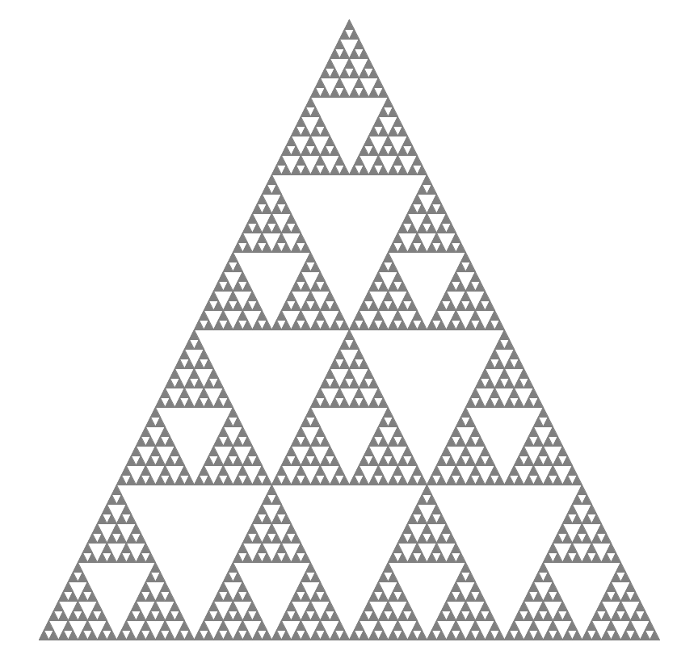
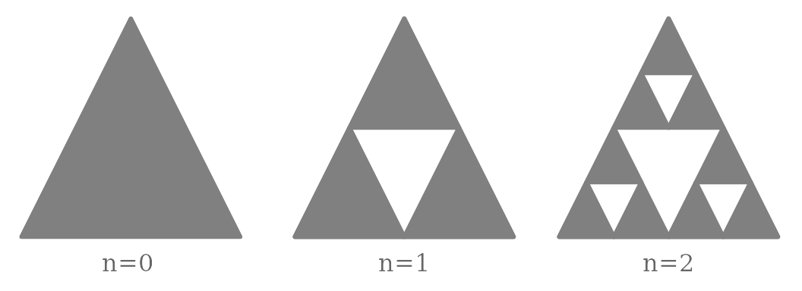
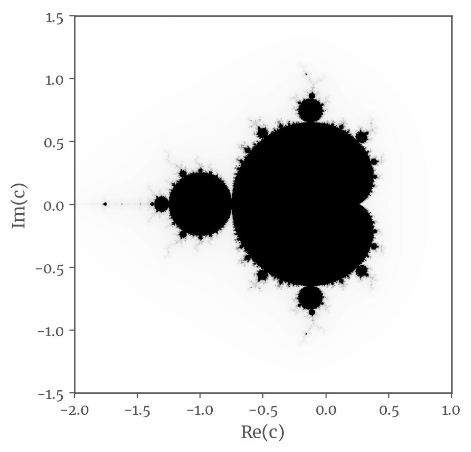
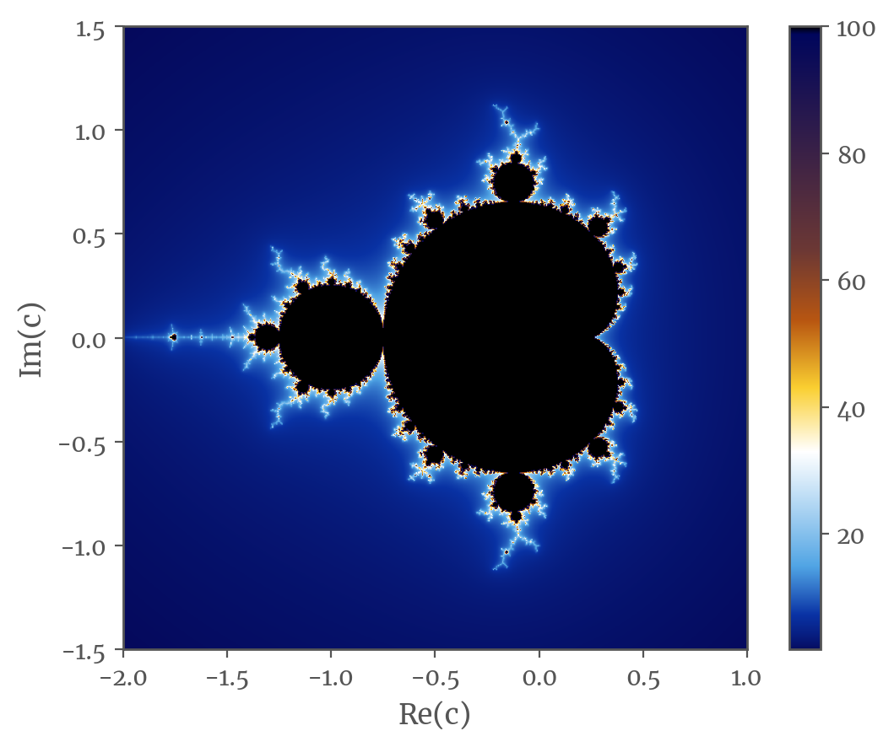
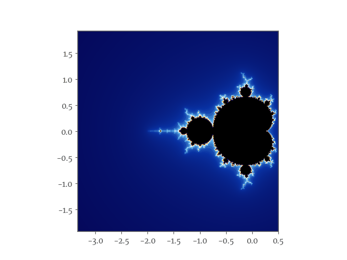
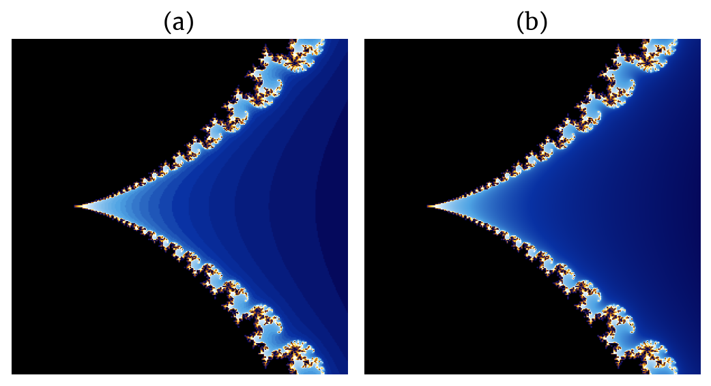
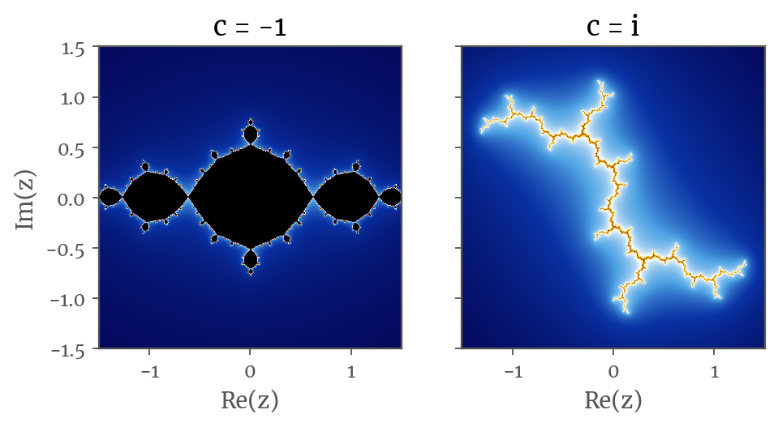
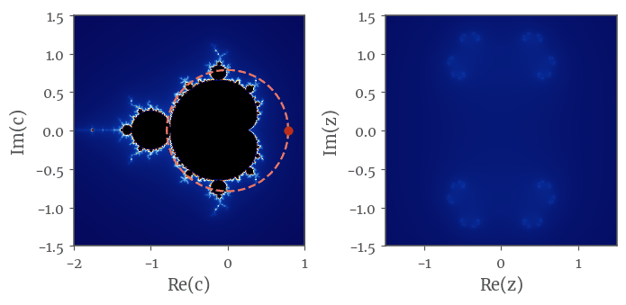

Note
You can find the code used to generate the post’s images and animations in github.com/gabriel-msilva/fractal-sets.
Introduction
Fractals are a beautifully complex – and I usually do not use these words together – topic in Mathematics. Among many conceptual disagreements between mathematicians, at some point Benoit Mendelbrot proposed a simple and approachable definition:
A fractal is a shape made of parts similar to the whole in some way.
Figure 1 illustrates this. You could painstakingly count how many triangles do you see to measure your IQ in some online test, but let’s look at some properties of this shape.

We notice that the main equilateral triangle repeats itself into many other smaller triangles. More formally, this property is called self-similarity, when parts of a shape have exactly or approximately similar parts of itself (“the whole”). This is observed by zooming into the shape, just to find the same patterns again.
Despite the figure presenting a limited number of triangles, you could easily extrapolate the shape at arbitrarily smaller scales by understanding the repeating pattern, the rule used to create this shape. Maybe something like:
Start with an equilateral triangle of any size;
Inscribe another equilateral triangle into it and remove this area;
Repeat step 2 for each triangle formed
Figure 2 illustrates the first iterations Notice that this set of rules does not halt, i.e. it goes on indefinitely. If you did not stop drawing this pattern, you would obtain a fractal called Sierpiński triangle.

This a simple example of a fractal. There are many others that create more complex patterns, but not necessarily by much more complex rules. Gaston Julia and Benoit Mandelbrot were influential mathematicians in fractal geometry, well-known for the sets which take their names.
Mandelbrot set
The Mandelbrot set is the set of complex numbers \(c = x + yi\) for which the sequence
\[ z_{n + 1} = z_n^2 + c, \quad z_0 = 0 \]
does not diverge as \(n\) grows. For example, when \(c = 1\),
\[\begin{alignat}{4} z_0 &=& & & 0 \\ z_1 &=& 0^2 & +1 =& 1 \\ z_2 &=& 1^2 & +1 =& 2 \\ z_3 &=& 2^2 & +1 =& 5 \\ z_4 &=& 5^2 & +1 =& 26 \\ & \dots \\ \end{alignat}\]
We can see that \(|z_n| \rightarrow \infty\) when \(n \rightarrow \infty\) and thus \(c = 1\) is not part of the Mandelbrot set. On the other hand, for \(c = -1\), \(z_n\) oscillates between \(-1\) and \(0\), i.e. it remains bounded, so it belongs to the set.
\[\begin{alignat}{4} z_0 &=& & & 0 \\ z_1 &=& 0^2 & -1 =& -1 \\ z_2 &=& (-1)^2 & -1 =& 0 \\ z_3 &=& 0^2 & -1 =& -1 \\ z_4 &=& (-1)^2 & -1 =& 0 \\ & \dots \\ \end{alignat}\]
For the boundary \(|z| \leq 2\) (\(|z| = \sqrt{x^2 + y^2}\), so a circle in the complex plane), the Mandelbrot set looks like Figure 3. We are looking at \(c\) points for which \(|z_n| \leq 2\) for every \(n = \{1, 2, 3, \dots, 100\}\) iteration.

It also interesting to see how many iterations does it take for \(z_n\) to escape the boundary. For \(c = -0.8 + 0.5i\) in Figure 4, \(z\) takes \(n = 6\) iterations to escape the boundary.
If we map this iteration count to the color aesthetic of each point \(c\), we get Figure 5.

But where is the self-similarity? We need to zoom-in to see it better – and there are many “hidden” repeating patterns inside the Mandelbrot set. Figure 6 focus on one of these, but you probably can spot other across the way.

Actually, the colored Mandelbrot is not so smooth as can be seen on Figure 5. It creates “bands of color” as in Figure 7 (a), because the iteration count is a natural number. The continuous coloring (Figure 7 (b)) is obtained by applying an algorithm called “normalized iteration count”, which adds \(\delta \in [0, 1[\) to iteration count as function of \(|z|\).

Julia set
Similarly to the Mandelbrot set, the Julia set is the set of complex numbers \(z\) for which the recursive function
\[ R(z) = \frac{P(z)}{Q(z)} \]
does not diverge (or escapes a boundary) for a increasing number of iterations. \(P\) and \(Q\) are polynomials without common divisors. Consider a particular Julia set where \(R(z) = z^2 + c\), then we have an equation analogous to the logistic mapping of the Mandelbrot set
\[ z_{n + 1} = z_n^2 + c \]
but for a fixed complex \(c\) instead of a fixed \(z_0\). In the same manner, we will count how many iterations does it take for \(z_n\) to escape the boundary \(|z| \leq 2\) for a given \(c\). Figure 8 shows this particular Julia set for two values of \(c\).

The Julia set also has many self-similarities, as illustrated by Figure 9.

Relation between Mandelbrot and Julia sets
While Mandelbrot set is mapped into \(z\) complex plane, Julia set is mapped into \(c\) complex plane. So, for each point of the Mandelbrot set there is a corresponding Julia set, and vice-versa. Figure 10 shows this correspondence along a line segment on the Mandelbrot set.

Let’s take this opportunity to remember “the most remarkable formula in mathematics”, the Euler’s formula:
\[ e^{i x} = \cos x + i \sin x, \quad \text{for any } x \in \mathbb{R} \]
When \(x = \pi\),
\[ e^{i\pi} + 1 = 0 \]
A beautiful identity as it contains five of the most fundamental numbers in Mathematics. Let \(c = r e^{i \theta}\), then
\[ \begin{cases} \mathrm{Re}(c) = r \cos{\theta} \\ \mathrm{Im}(c) = r \sin{\theta} \end{cases} \]
which is a circumference in the complex plane, thus connecting trigonometry and complex numbers. Figure 11 shows Julia sets for a counter-clockwise rotation around a circumference \(r e^{i \theta}\).

Final notes
Fractal shapes can be seen in Nature like in a humble cauliflower, but they are also applied in technology, as fractal antennas, or in explaining considerable differences in coastline length measurements.
Aside from its applications, I think fractals are just pretty neat. I mean, look at this:
To close, my recommendation of a couple of videos from amazing YouTube channels to dive more into fractals.